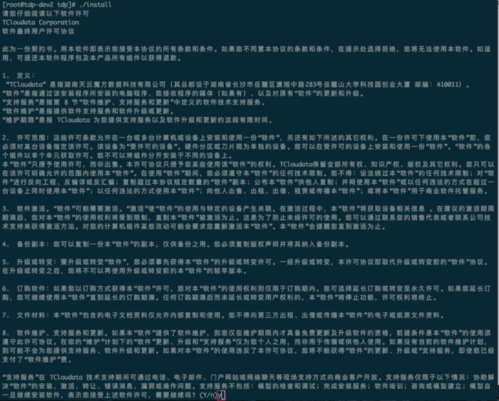
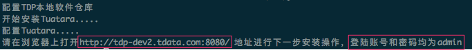

免责申明
本说明书依据现有信息制作，其内容如有更改,恕不另行通知。 湖南天云魔方数据科技有限公司在编写该说明书的时候已尽最大努力保证期内容准确可靠，但湖南天云魔方数据科技有限公司不对本说明书中的遗漏、不准确或印刷错误导致的损失和损害承担责任。 具体产品使用请以实际使用为准。
注释: Hadoop® 和 SPARK® 是Apache™ 软件基金会在美国和其他国家的商标或注册的商标。 Java® 是 Oracle 公司在美国和其他国家的商标或注册的商标。 Intel® 和 Xeon® 是英特尔公司在美国、中国和其他国家的商标或注册的商标。
版权所有 © 2015年-2016年湖南天云魔方数据科技有限公司。保留所有权利。
©湖南天云魔方数据科技有限公司版权所有，并保留对本说明书及本声明的最终解释权和修改权。 本说明书的版权归湖南天云魔方数据科技有限公司所有。未得到湖南天云魔方数据科技有限公司的书面许可，任何人不得以任何方式或形式对本说明书内的任何部分进行复制、摘录、备份、修改、传播、翻译成其他语言、或将其全部或部分用于商业用途。
1. 本书内容
该手册详细描述了TCloudata Data Platform 2.7的架构以及安装过程。
通过阅读该手册，读者可以掌握TCloudata Data Platform 2.7 产品的安装技能。
2. 简介
2.1. TCloudata Data Platform介绍
TCloudata Data Platform（以下简称TDP）是湖南天云魔方数据科技有限公司（以下简称天云魔方）发布的一站式大数据分析平台。具有大数据存储与集成、数据可视化、数据统计分析、数据共享服务、数据挖掘等功能。
TDP大数据分析平台是在Hadoop基础上，主要利用Spark计算框架、Alluxio文件共享框架、Yarn分布式资源管理系统、Docker容器级虚拟化技术，建立的大数据分析平台，为用户提供数据集成、数据清洗、数据预处理、数据分析、数据挖掘、数据可视化、数据报告等众多功能的集成性平台，能够将用户所有类型的数据，加载到平台，并能够可视化用户的数据，提供挖掘数据的高效平台。用户可利用TDP大数据分析平台进行各类综合分析，提供多视角、多维度的研究分析渠道，快速发现潜在的规律与趋势, 挖掘数据的价值，实现智慧决策, 各类优化的算法与模型，让用户决策更快速，让用户更容易了解和掌握数据内在的关联性、成因和预测等。 TDP大数据分析平台最终目标是简化大数据分析的过程，让用户能够快速从数据获得决策智慧。
平台架构如下
2.2. 集群架构
TDP是本质上是一个计算和存储集群，因此在部署TDP之前，首先需要对集群做一个规划，规划包括集群的节点、网络、操作系统版本、TDP组件分布等部门。运维人员必须保证将用于部署集群的服务器满足TDP平台的基本要求（后面将详细描述）。这些要去包括硬件要求、软件要求、内存要求、网络要求等。TDP通过集群内部网络连接所有服务器并实现整个集群的服务，因此部署之前需要仔细计算应用服务队网络带宽和延迟的需要并规划整个网络拓扑，如有需要您可以咨询湖南天云魔方数据科技有限公司的售前工程师和架构师。依据不同应用的特点可以部署TDP的一个多个组件。我们在第下一章将列出安装前的硬件要求和软件要求，在满足这些要求的基础上，您才可以开始进行平台部署。平台部署包括以下几个主要步骤：
-
在集群中所有的节点安装所需要的操作系统
-
在管理节点上安装Tuatara
-
使用管理节点的Web界面完成后续的集群安装和配置。
3. 安装准备
3.1. 硬件环境要求
TDP提供集群服务来保证服务的高可用，因此集群系统必须是3台以上物理服务器或虚拟机组成，每台服务器的最低配置如下：
-
1颗4核带超线程X86指令集CPU的服务器
-
32G内存
-
2个300G硬盘做RAID1，作为系统盘
-
2个2T SATA硬盘，作为数据盘
-
2个千兆以太网
为了实现更好的性能以及性价比，TDP依据不同组件特性土建不同的配置，对于组件的Namenode和Master推荐使用以下配置：
-
2颗6核带超线程的x86指令集CPU服务器 (比如Intel® Xeon®E5-2640 v3 CPU)
-
128G以上内存
-
4个600G以上硬盘做成RAID0+1做成系统盘和管理数据盘
-
4个千兆以上网卡
数据节点(Datanode)的硬盘配置依据不同的特点有不同的推荐，使用Spark®需要更多的内存以及计算资源。数据节点推荐配置如下：
-
2颗8核带超线程的x86指令集CPU服务器 (比如Intel® Xeon®E5-2650 v3 CPU)
-
2个300G以上硬盘做成RAID，作为系统盘
-
8个2T以上容量SATA磁盘做成JBOD，作为数据盘
-
4个千兆以上网卡
3.2. 操作系统要求
理论上TDP并不要求集群中的每个节点操作系统版本一致，但是为了管理方便和最大可能保持一致性，强烈建议所有节点安装相同的操作系统。TDP目前支持以下操作系统：
| 操作系统 | 版本 |
|---|---|
Red Hat Enterprise Linux |
6.5, 6.6, 6.7, 7.0, 7.1, 7.2 |
CentOS |
6.5, 6.6, 6.7,7.0, 7.1, 7.2 |
| TDP安装包需要从操作系统的基本软件仓库中获取所依赖的软件包，如果您的操作系统不能获取基本软件仓库或者没有没有采取安全安装，则在TDP部署过程中，可能会出现无法找到所需软件包的报错。 |
3.2.1. 浏览器要求
Tuatara 是一个基于浏览器的应用程序。为了获取全部的功能，Tuatara对浏览器有一定的要求，以下是经过测试可以兼容的浏览器最低版本：
-
Windows(7,8)
-
Internet Exporer 10
-
Firefox 18
-
Google Chrome 30
-
-
Mac OS X (10.6及以上)
-
Firefox 40
-
Safari 6
-
Google Chrome 30
-
-
Linux(CentOS,RHEL,Debian,Ubuntu)
-
Firefox 18
-
Google Chrome 26
-
其他平台，我们推荐您使用最新稳定版本的浏览器。
3.2.2. Java运行环境要求
TDP支持以下Java运行环境：
-
Oracle JDK 1.8 64-bit(不低于JDK 1.8_60)(默认)
-
Oracle JDK 1.7 64-bit(不低于JDK 1.7_67)
-
OpenJDK 8 64-bit
-
OpenJKD 7 64-bit
| 如果您集群机器还没有安装JDK，您无需自行安装，TDP安装工具会安装自带的JDK软件。 |
3.2.3. 数据库要求
Tuatara使用关系数据库来存储配置和拓扑结构信息。如果您安装TDP的Hive或Oozie组件，它们也需要关系数据库。下表列出了TDP平台需要关系数据库的组件以及对数据库的要求：
| 组件 | 数据库 | 描述 |
|---|---|---|
Tuatara |
- PostgreSQL 8 - PostgreSQL 9.1.13+,9.3 - MySQL 5.6 - Oracle 11gR2 - Oracle 12c |
默认情况下，Tuatara使用PostgreSQL作为后端数据库 |
Hive |
- PostgreSQL 8 - PostgreSQL 9.1.13+,9.3 - MySQL 5.6 - Oracle 11gR2 - Oracle 12c |
默认情况下，Hive使用MySQL作为后端数据库 |
Oozie |
- PostgreSQL 8 - PostgreSQL 9.1.13+,9.3 - MySQL 5.6 - Oracle 11gR2 - Oracle 12c |
默认情况下，Oozie会安装Derby实例，但从性能考虑，推荐使用MySQL作为后端数据库。 |
Ranger |
- PostgreSQL 8 - PostgreSQL 9.1.13+,9.3 - MySQL 5.6 - Oracle 11gR2 - Oracle 12c |
必须存在上述数据库实例，Ranger并不会创建数据库实例 |
4. 安装前的检查
4.1. 操作系统分区要求
系统安装和运行需要占用磁盘空间，操作系统以及必须的软件和日志预计需要150GB以上磁盘空间。对磁盘进行分区注意以下要求：
-
至少需要swap和根分区
-
推荐操作系统根分区为100GB — 300GB
-
推荐用于数据存储的每个磁盘挂载到/tdp/grid<n>(n为数字)上不同的挂载点，如果是RHEL6及类似操作系统，推荐文件系统为
ext4，RHEL7及以上推荐使用xfs文件系统。 -
HDFS Datanode的数据目录要和系统分区分隔。
对于Namenode服务器，建议的最小分区如下：
| 文件系统 | 大小(GB) | 挂载目录 | 文件系统类型 |
|---|---|---|---|
/dev/sda1 |
100 |
/ |
xfs |
/dev/sda2 |
16 |
N/A |
swap |
/dev/sda3 |
200 |
/hadoop |
xfs |
/dev/sda4 |
200 |
/var/log |
xfs |
对于Datanodeer而言，主要把存储磁盘按照顺序挂载到特定的目录，推荐的分区如下：
| 文件系统 | 大小(GB) | 挂载目录 | 文件系统类型 |
|---|---|---|---|
/dev/sda1 |
100 |
/ |
xfs |
/dev/sda2 |
16 |
N/A |
swap |
/dev/sda3 |
200 |
/hadoop |
xfs |
/dev/sda4 |
200 |
/var/log |
xfs |
/dev/sdb1 |
2000 |
/tdp/grid1 |
xfs |
/dev/sdc1 |
2000 |
/tdp/grid2 |
xfs |
/dev/sdd1 |
2000 |
/tdp/grid3 |
xfs |
4.2. 内存容量要求
每台服务器的内存建议不少于64GB。依据每台服务器上运行的TDP组件不同，所需要的内存大小也有所不同。以下列出TDP的重要组件所需要的推荐内容：
| 服务 | 建议内存(GB) |
|---|---|
Tuatara Server |
8 |
HDFS Namenode |
32 |
HDFS Namenode(HA) |
64 |
HDFS Datanode |
4 |
YARN ResourceManager |
8 |
YARN NodeManager |
4 |
HBase Master Server |
8 |
Hive server |
8 |
4.3. 网络设置
安装TDP的最低网络配置为千兆以太网络。当以太机器上有多个千兆以太网卡时，可以在安装TDP之前进行绑定设置。有关网卡如何绑定，可以参考操作系统配置手册，这里不赘述。
4.4. NTP服务设置
TDP的大部分组件都是分布式服务，分布式服务的一个最基本依赖是对时间同步的要求。集群内的服务器时钟如果不同步会导致关键服务无法正常运行。因此需要检查集群中的每台服务器是否已经配置了NTP服务，且设置了自动启动。
| 检查 | 设置 | |
|---|---|---|
RHEL/CentOS/ 6 |
chkconfig --list ntpd |
chkconfig ntpd on |
RHEL/CentOS/ 7 |
systemctl is-enabled ntpd |
systemctl start ntpd |
4.5. 设置SSH无密码登陆
Tuatara为了可以自动在集群中的每台服务器上安装Tuatara Agent，需要无密码提示的方式通过SSH登陆到服务器来安装Agent。因此需要在安装 Tuatara Server 机器上的创建密钥对，并分发到集群中的每台机器。
| 如果选择选择手工安装Tuatara Agent则不可以跳过这个步骤。 |
首先在Tuatara Server机器上创建root账号的SSH公私钥（如果还没有）
ssh-keygen -t rsa
而后，对每一台服务器，拷贝并设置私钥认证登陆
ssh-copy-id root@<remote.target.host>
这里 <remote.target.host> 指的是集群中服务器的名字
使用非root账号的无密钥SSH登陆来自动安装Tuatara Agent也是可行的，但要求改账号必须有 sudo 权限。
|
4.6. 检查DNS及NSCD
因为TDP使用FQDN来管理集群中的服务器，因此需要使用DNS服务器来解析集群内所有服务器的主机名。如果是小型集群（比如20个节点以下），建议可以把主机名以及对应的IP地址写入到每台服务器的 /etc/hosts 文件中。
4.7. 配置防火墙
TDP平台中的服务之间有相当多的资源需要互相交换，涉及的端口众多。因为Hadoop一开始是针对集群内网络是互信的基础来来开发的。因此推荐针对集群内网络关闭防火墙。
RHEL/CentOS Linux 6
chkconfig iptables off service iptables off
RHEL/CentOS Linux 7
systemctl disable firewalld systemctl stop firewalld
4.8. 禁用SELinux及PackageKit
集群内服务器必须禁用SELinux特性。在每台机器上执行
setenforce 0
来禁用。同时编辑 /etc/selinux/config 文件，修改或增加 SELINUX=disabled 来确保重启后SELinux仍被禁用。
如果服务器安装了 PackageKit ，修改 /etc/yum/pluginconf.d/refresh-packagekit.conf 修改下面这行
enabled=0
5. TDP 组件角色介绍
要在集群中运行TDP服务, 需要指定集群中的一个或多个节点执行该服务的特定功能.这些功能被归类为功能性的角色,角色用于定义节点能为集群中的服务器提供哪些功能. 角色分配是必须的,没有角色集群无法正常工作.在分配角色之前,需要了解这些角色的含义以及对应于服务节点需要哪些角色.
5.1. Zookeeper 角色
| 角色 | 描述 |
|---|---|
Zookeeper |
一个或多个运行ZooKeeper服务的节点。ZooKeeper服务是指包 含一个或多个节点的集群提供服务框架用于集群管理。对于集 群,Zookeeper服务提供的功能包括维护配置信息、命名、提供 HyperBase的分布式同步,以及当 HMaster停止时触发master选 择。HyperBase需要有一个ZooKeeper集群才能工作。 推荐在 ZooKeeper集群中至少有3个节点。 |
5.2. HDFS 角色
| 角色 | 描述 |
|---|---|
Namenode |
HDFS系统中的节点用于维护文件系统中所有文件的目录结构并跟踪文件数据存储于哪些数据节点。当客户端需要从HDFS 文件系统中获得文件时,它通过和NameNode通讯来知道客户端哪个数据节点上有客户端需要的文件。 一个Hadoop集群中只能有一个NameNode。NameNode 不能被赋予其他角色。 |
Datanode |
在HDFS中, Datanode是用来存储数据块的节点. |
Secondary Namenode |
为NameNode上的数据创建周期性检查点的节点。节点将周期性地下载当前NameNode镜像和日志文件,将日志和镜像文件合并为一个新的镜像文件然后上传到NameNode。 被分配了NameNode角色的机器不应再被分配Secondary NameNode 角色。 |
Standby Namenode |
Standby模式的NameNode元数据(Namespcae information 和 Block locations map)都是和Active NameNode中的元数据是同步的,一旦切换成Active模式,马上就可以提供NameNode服务。 |
JournalNode |
Standby NameName和ActiveNameNode通过JournalNode通信,保持信息同步。用来选举ActiveNamenode以及失效切换 |
5.3. YARN 角色
| 角色 | 描述 |
|---|---|
Resource Manager |
ResourceManager负责将各个资源部分(计算、内存、带宽等)安排 给基础 NodeManager,并与NodeManager一起启动和监视它们的基础 应用程序。 |
Timeline Server |
提供对YARN的作业历史日志信息的展现服务 |
NodeManager |
NodeManager 管理一个YARN集群中的每个节点。提供针对集群中每个节点的服务，从监督对每个容器的生命周期管理到监视资源和跟踪节点的状态。 |
5.4. HBase 角色
| 角色 | 描述 |
|---|---|
HBase Master |
实现HBase数据库以下功能：管理RegionServer，平衡整个集群。 |
HBase Region |
负责服务和管理HBase区域的节点 |
HBase Thrift |
Thrift Client API 开放的节点，客户端可通过Thrift和HBase通信。 |
5.5. Hive 角色
| 角色 | 描述 |
|---|---|
Hive Metastore |
存储表结构以及元数据信息 |
Hive Server2 |
Hive运行节点，帮助查询和管理HDFS的大型数据集。 |
5.6. Sqoop 角色
| 角色 | 描述 |
|---|---|
Sqoop |
Sqoop 是一款用于在Hadoop(Hive,HBase)和传统数据库(MySQL,Oracle,…)间进行数据交换的工具。 |
5.7. Oozie 角色
| 角色 | 描述 |
|---|---|
Oozie Server |
Oozie的任务管理工具 |
6. 安装
TDP的安装分为两个主要步骤，第一个步骤是通过产品介质上的安装程序安装 Tuatara Server。第二个步骤是通过Web界面部署集群。
为了后面描述方便，这里我们假定集群由3台服务器组成，每台服务器的IP地址以及名称如下：
| 序号 | 主机名 | IP地址 |
|---|---|---|
操作系统及版本 |
1 |
tdp-dev1.tdata.com |
192.168.2.240 |
CentOS 7 |
2 |
tdp-dev2.tdata.com |
192.168.2.241 |
CentOS 7 |
3 |
tdp-dev3.tdata.com |
192.168.2.242 |
我们将在 tdp-dev2.tdata.com 安装 Tuatara Server
6.1. 安装Tuatara
将安装介质插入到 tdp-dev2.tdata.com 服务器上，如果是图形界面，应该会自动挂载，否则请在命令行执行
mount /dev/sr0 /mnt
一旦挂载成功，进入介质目录，然后开始运行安装命令
# cd /mnt # ./install
-
系统首先需要您阅读软件授权许可。阅读完毕，输入
Y或y表示接受，否则退出安装。 -
系统将会自动检查环境并安装需要的软件包，配置本地仓库，配置
Tuatara Server。 -
一旦安装完成，系统会提示您下一步的操作。

在下一章,我们介绍如何利用向导来部署一个TDP集群.
7. 集群部署
使用TDP安装向导，可以帮助您快速安装、配置和部署大数据集群，大致有一下几个步骤：
7.1. 登陆安装向导
上一章安装和配置Tuatara后,会提示下一步操作的地址以及账号和密码：
-
打开浏览器，浏览 http://tdp-dev2.tdata.com:8080
-
输入账号
admin以及密码admin进行登陆。
7.2. 启动集群部署向导
登陆成功后，在欢迎界面，选择 创建集群 视图中的 "启动安装向导" 按钮。开始使用向导来部署集群。
7.3. 集群命名
首先，需要给您的集群设置一个集群名字，集群名字不能包含特殊字符，当前仅支持字母以及下划线(_)。这里我们假定集群名为 tdp_test。点击“下一步”。

7.4. 选择堆栈
堆栈是TDP的组件集合，可能存在多个堆栈版本，通过单选按钮选择您希望安装的堆栈版本（这里选择最新的 TDP 2.7 )。
”高级资源库选项“ 里设定获取软件包的仓库地址，这里已经设定完毕，无需修改。点击”下一步“”
7.5. 安装选项
为了搭建集群，安装向导需要您提供与集群部署相关的信息。您需要提供集群中每台服务器的FQDN名字。向导也需要您提供在设置SSH无密码登陆一节中创建的私钥。通过主机名以及私钥，安装向导能够定位、访问、以及和集群内所有服务器进行安全的交互操作。
-
在
目标主机输入框里，输入您集群中的所有服务器主机名，每行一个，您可以通过使用中括号的方式来表示一个服务器集合。比如，对于从host01.example.com到host10.example.com的10台服务器，我们可以使用host[01-10].example.com的方式来表示。我们这里填写。
tdp-dev1.tdata.com tdp-dev2.tdata.com tdp-dev3.tdata.com
-
如果您选择让安装向导通过SSH方式来自动给每台服务器安装代理程序，那么点击
提供SSH私钥来自动注册主机`选项。对于私钥，您可以选择点击 `选取文件的方式来提供一个私钥文件，或者直接在下面的文本框里输入粘贴私钥。 已自行输入私钥为例，您可以已root账号登陆当前运行Tuatara Server（这里是tdp-dev2.tdata.com) 服务器上，然后复制/root/.ssh/id_rsa文件内容，并粘贴到私钥文本框里。[NOTE] 如果您使用
IE 9，选取文件按钮可能不会显示。请使用粘贴私钥的方式。 -
如果您不希望自动安装代理程序，那么选择
执行手工注册在所有主机上，不使用SSH按钮。可以查看手工安装代理程序章节来获得详细步骤。 -
然后点击“注册并确定”按钮。
7.6. 主机确认
主机确认提供您确定安装向导所配置的服务器都是正确有效的。
如果当前有服务器不对，可以选择对应的服务器，然后点击 移除选中项 的方式来删除。
在屏幕的下方，您可能注意到有一个黄色的文本框提示说对主机进行检查时遇到了一些警告。可以点击 这里 链接这里来查看遇到的警告，警告页也提供了通过执行Python脚本的方式来帮助您修复警告并重新检查。
当确认所有主机无误后，点击”下一步“
7.7. 选择服务
依据您在之前选择的堆栈版本不同，这里列出的服务组件可能会有所不同。 您可以针对您的业务选择需要的组件。或者以后[add_services]。默认情况下，向导选择了所有服务。这里我们选择一下组件：
-
HDFS
-
YARN + MapReduces
-
Tez
-
Hive
-
HBase
-
Zookeeper
-
Spark
-
Pig
-
Ambari Metrics
选定完毕后，点击”下一步“。
| 所有的组件在之后还可以添加和删除，所以我们建议总是从选择目前需要的组件开始。 |
7.8. 分配Master
向导会依据集群内节点的数量和资源自动分配Master组件到合适的服务器，在这里，您可以自行指定每个Master组件分配到哪台服务器上。
左边栏显示了当前的服务以及主机，右边栏显示当前已经分配了的Master组件以及分配的服务器。
分配完毕后，点击 “下一步”。
如果组件右侧有 符号，则表示该组件可以分配到多个服务器，比如 Zookeeper Server , HBase Master 。
|
7.9. 分配Slave和Client
和Master组件分配一样，向导会自动将所有Slave(DataNodes,NodeManagers,RegionServers)及Client组件分配给合适的服务器。
这里我们把三台服务器都当成 Datenode 节点以及 YARN NodeManager 以及 HBase RegionServer。
7.10. 定制服务
定制服务步骤可以对您选择的每个服务参数进行配置。
通过每个服务标签页，您可以看到每个服务的参数简述以及当前配置的值。当前如果有服务配置需要您自定配置，则会在服务标签页右上角用用红色的数字来标记。
其中，重要的参数包括
- Directories
-
TDP用于保存信息的目录，该参数非常重要。向导会基于服务器的文件系统挂载点以及系统环境来选择所有可能的存储目录。但是我们仍然强烈建议您检查其配置参数。对于类似
/tmp以及/var这些目录不能用于HDFS NameNode 和 DataNode 目录。 - Password
-
Hive，Oozie 需要数据库密码，Knox需要主安全密码。比Hive为例，选择
Hive标签，展开高级选项。数据库密码字段标记为空色，需要您填写。 - Namenode
-
定义Namenode数据的保存路径
- Datanode
-
定义Datanode的数据保存路径，填写数据磁盘的挂载路径，一行一个。
- Hive Metastore
-
配置Hive Metastore所需要的数据库连接参数。
我们推荐使用MySQL来保存 Hive Metastore 以及以后需要关系型数据库的服务的信息。假定我们在 tdp-dev3.tdata.com 上来安装 MySQL Server。SSH 登陆到 tdp-dev3.tdata.com ，首先安装必要的软件包。
yum install -y mariadb-server mariadb-libs mariadb systemctl enable mariadb systemctl start mariadb
如果是CentOS 6.x版本，则执行 yum install -y mysql-server mysql-libs mysql && service mysql start
|
然后创建必要的账号和数据库
MariaDB [(none)]> drop user ''@'localhost'; (1)
Query OK, 0 rows affected (0.00 sec)
MariaDB [(none)]> drop user ''@'tdp-dev3.tdata.com'; (1)
Query OK, 0 rows affected (0.00 sec)
MariaDB [(none)]> grant all on hive.* to 'hive'@'%' identified by 'hive123'; (2)
Query OK, 0 rows affected (0.00 sec)
MariaDB [(none)]> create database hive; (3)
Query OK, 1 row affected (0.00 sec)| 1 | 删除用户名为空的账号 |
| 2 | 创建Hive Metastore服务连接数据库的账号和密码，这里账号为 hive ，密码为 hive123 |
| 3 | 创建Hive Metastore服务需要的数据库，这里数据库名为 hive |
回到安装向导页面，在 Hive 标签页的 Advanced 标签里,依据刚才创建的数据库账号和数据库名称，填写对应的内容
Hive Database: Existing MySQL Database Database Host: tdp-dev3.tdata.com Database Password: hive123
填写完成后，点击 按钮进行连接测试。 如果连接成功，则会给出 "连接成功" 的提示。
完成上述步骤后，点击 ”下一步”。
7.11. 检查
所有的部署都在会这个页面显示。仔细检查这些部署，确认是否正确，如果有需要修改，可以点击页面左边栏的了导航树形菜单来跳转到您需要修改的页面。
您可以选择 打印 来打印上述信息，以备以后参与。
检查如果没有问题，则可以点击 “部署” 按钮。
7.12. 安装启动和测试
安装进度以及安装过程会在屏幕上显示。向导会针对每个需要安装的组件进行部署、启动和测试用来确保组件成功安装。
如果想查看每台服务器的具体安装情况，可以点击 消息 栏目链接，在弹出的任务窗口，可以点击每一个独立的任务来查看详细的安装日志。
当 消息 栏目出现绿色成功字样后，表示服务全部安装并启动完毕，可以点击 下一步 按钮。
7.13. 完成安装
显示安装小结，点击 完成 按钮。
向导完成后，将会回到集群管理界面，这里能看到当前集群的状态。
7.14. 手工安装代理程序
如果您不希望通过SSH自动登录安装代理程序的方式，您可以手工安装代理程序并注册。
首先您想要创建包含有代理程序软件包的仓库。创建 /etc/yum.repos.d/ambari.repo 文件，填写以下内容：
[Tuatara-2.2.2.0] name=Tuatara 2.2.2.0 baseurl=http://tdp-dev2.tdata.com/tuatara/centos7/2.2.2.0/ gpgcheck=0 enabled=1
[NOTE] baseurl 中的主机地址 tdp-dev2.tdata.com 需要依据您实际环境进行修改。实际内容可以参考安装 Tuatara Server 服务器上的 /etc/yum/repos.d/ambari.repo 文件。
然后安装 ambari-agent 程序
yum install -y ambari-agent
编辑 /etc/ambari-agent/conf/ambari-agent.ini ，找到
[server] hostname=localhost
这几行，把 localhost 修改成安装有 Tuatara Server 的服务器主机名，这里是 tdp-dev2.tdata.com
启动代理程序。
/etc/init.d/ambari-agent start
附录 A: TDP 所用服务账号及端口
在 TDP 中，用到了不少系统账号以及众多的端口，这里做个列表，方便读者查询。
A.1. 服务账号
| 服务 | 组件 | 账号 |
|---|---|---|
HDFS |
NameNode,SecondaryNameNode,DataNode |
hdfs |
MapReduce2 |
HistoryServer |
mapred |
YARN |
ResourceManager,NodeManager |
yarn |
Hive |
Hive MetaStore,Hive Server2 |
hive |
HCat |
Hcatalog Server |
hcat |
WebHcat |
WebHcat Server |
hcat |
Oozie |
Oozie Server |
oozie |
HBase |
MasterServer,RegionServer,ThriftServer |
hbase |
Zookeeper |
Zookeeper Server,Zookeeper Client |
zookeeper |
Ranger |
Ranger Server |
ranger |
Solr |
Solr Server |
solr |
Spark |
Spark Server,Spark Thrift,Spark SQL |
spark |
HDFS |
Hadoop HTTP Server |
httpfs |
A.2. TDP 端口使用
TDP使用了相当多的高段端口，如果配置防火墙，则需要清楚了了解到Hadoop的每个组件默认情况下使用了哪些端口。下面我们依据各组件来分别列出默认情况下使用的端口信息。
A.2.1. HDFS 使用端口
| 服务 | 节点 | 端口 | 协议 | 描述 |
|---|---|---|---|---|
NameNode WebUI |
主服务节点 |
50070 |
http |
查看当前状态，浏览文件系统 |
NameNode WebUI |
主服务节点 |
50074 |
https |
安全http服务 |
NameNode metadata service |
主服务节点 |
8020/9000 |
IPC |
文件系统元数据操作 |
DataNode |
所有从节点 |
50075 |
http |
DataNode WebUI |
DataNode |
所有从节点 |
50475 |
https |
安全http服务 |
DataNode |
所有从节点 |
50010 |
数据传输 |
|
DataNode |
所有从节点 |
50020 |
IPC |
元数据操作 |
A.2.2. YARN 使用端口
| 服务 | 节点 | 端口 | 协议 | 描述 |
|---|---|---|---|---|
Resource Manager WebUI |
主节点 |
8088 |
http |
资源管理的WebUI |
Resource Manager |
主节点 |
8032 |
IPC |
应用提交 |
NodeManager WebUI |
所有从节点 |
50060 |
http |
A.2.3. Hive使用端口
| 服务 | 节点 | 端口 | 协议 | 描述 |
|---|---|---|---|---|
Hive Server |
Hive服务节点 |
10000 |
连接到Hive的编程服务 |
|
Hive WebUI |
Hive服务节点 |
9999 |
http |
浏览Hive数据库 |
Hive Metastore |
9933 |
http |
A.2.4. HBase使用端口
| 服务 | 节点 | 端口 | 协议 | 描述 |
|---|---|---|---|---|
HMaster |
主节点 |
60000 |
N/A |
|
HMaster Info WebUI |
主节点 |
60010 |
http |
|
Region Server |
所有从节点 |
60020 |
N/A |
|
Region Server |
所有从节点 |
60030 |
http |
|
HBase REST Server |
所有REST节点 |
8080 |
http |
|
HBase REST Server WebUI |
所有REST节点 |
8085 |
http |
|
HBase Thrift Server |
所有Thrift节点 |
9090 |
N/A |
|
HBase Thrift Server WebUI |
所有Thrift节点 |
9050 |
A.2.5. Zookeeper使用端口
| 服务 | 节点 | 端口 | 描述 |
|---|---|---|---|
ZooKeeper Server |
所有ZK节点 |
2888 |
ZK节点间通信 |
ZooKeeper Server |
所有ZK节点 |
3888 |
ZK领导者和其他节点通信 |
ZooKeeper Server |
所有ZK节点 |
2181 |
来自zoo.cfg，客户端连接 |